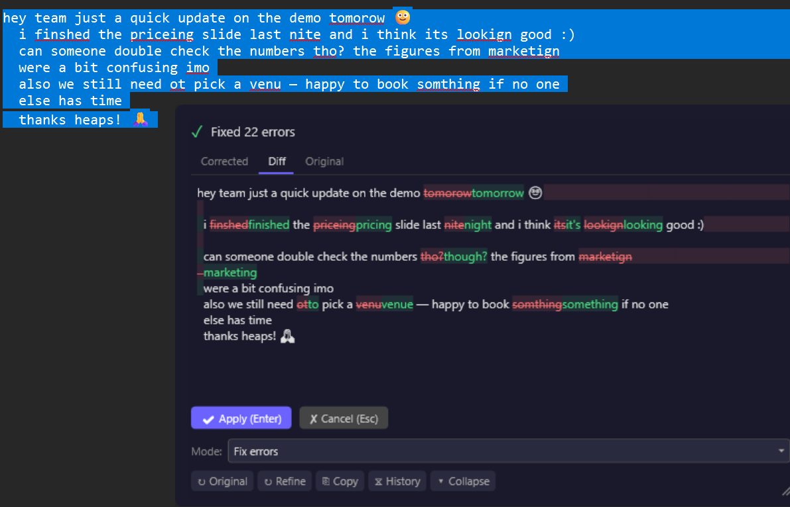
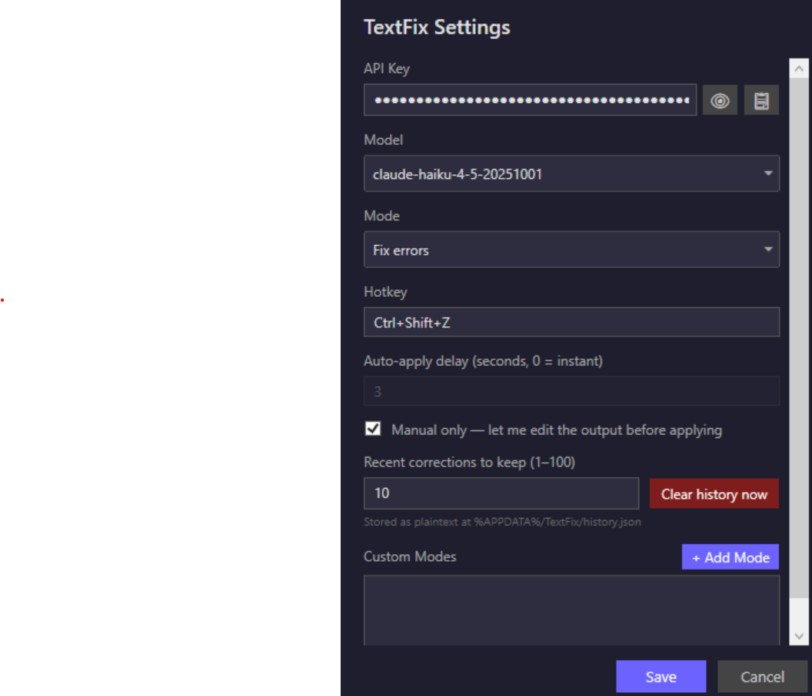

Fix your writing where you wrote it.
Select text in any Windows app — Teams, Outlook, your editor, a browser — press Ctrl+Shift+Z, review the diff, hit Enter. No copy-pasting into a chatbot and back.
Free & open source · MIT · Windows 10/11 · bring your own AI key, or run fully local
Three seconds, start to finish
Select
Anywhere text is text. TextFix lives in the system tray and works inside whatever app you're already in.
Press the hotkey
Ctrl+Shift+Z by default — configurable. Your selection goes to the AI you chose, with your instructions.
Review, then apply
A floating overlay shows exactly what changed, word by word. Enter replaces your text; Esc keeps the original. Nothing is ever applied unseen.

Six ways to say it — or write your own
A mode is just the instruction the AI gets. Switch from the overlay or the tray, mid-thought.
- Fix errors Spelling, grammar and typos. Tone untouched.
- Professional Polished business register for the email that matters.
- Concise Same point, fewer words.
- Friendly Warmer and more conversational.
- Expand Notes become sentences; sentences become paragraphs.
- Prompt enhancer Turns a rough ask into an effective AI prompt.
Custom modes take any system prompt you can type — translation, house style, your own voice.
Your text goes where you say — and nowhere else
- Run it fully local. Point TextFix at Ollama and corrections happen on your own hardware. No account, no key, no per-token cost, nothing leaves the machine — and the app can install Ollama for you.
- Or bring your own key. Anthropic, OpenAI, or any OpenAI-compatible endpoint — LM Studio, llama.cpp, OpenRouter, Groq, a corporate gateway. Keys are encrypted with Windows DPAPI and never leave your PC.
- Nothing phones home. No telemetry, no accounts, no middleman server. History and stats live on your disk, with a one-click wipe.
- Honest about trade-offs. Cloud models correct best; a small local model is free but rougher. The README publishes the measurements, so you can pick with open eyes.

Small tool, small footprint
One tray icon, one hotkey, a single settings file. Auto-updates in the background via GitHub Releases. The About window keeps a local tally of corrections made, time saved, and what this month's API calls actually cost — typically a fraction of a cent per correction.
The installer is currently unsigned — SmartScreen will ask once. The source is public if you'd rather build it yourself.